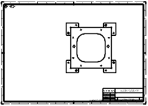
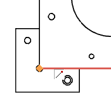
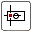
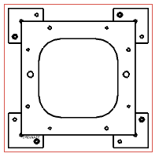
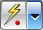
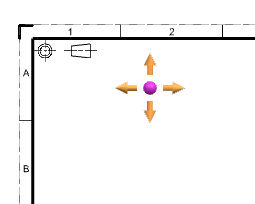
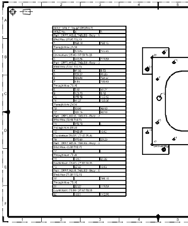

Create one hole table for all holes in multiple bodies
You will create one hole table in the drawing for all the holes in a base plate and four locator blocks. These solid bodies all reside in the same master model.
|
Note |
The Hole Table command is available only when the UGII_DRAFTING_HOLE_TABLE environment variable is set in your system. Before you begin this activity, check for this environment variable. If you do not find it, set the UGII_DRAFTING_HOLE_TABLE environment variable to a value of 1 and restart NX. |
-
Open drf7_85_hole_tables_dwg.

-
Confirm you are in the Drafting application.
-
On the Table toolbar, click Hole Table
 .
.
-
In the Hole Table dialog box, make sure that Type is set to Create Table and that Select Ordinate Origin
 is highlighted.
is highlighted.
-
On the Selection bar, verify that Arc Center
 is cleared.
is cleared.
-
Select the start point on the left edge of the base plate, as shown.

-
In the Holes group, make sure:
-
View Selection =

-
Select View  is highlighted.
-
-
In the graphics window, select the drafting view.
To select the view, move your cursor over the base plate and click when you see the tool tip for the imported view.

-
In the Settings group, from the Quadrant list, select Positive Quadrant I.
-
Make sure Specify Table Origin  is selected.
-
In the graphics window, click in zone A2 to place the hole table.

-
Click OK to create the table.

Examine the hole table. The hole closest to the origin point receives the first label. All holes in the same solid are indexed first, before holes in another solid are indexed.